Category:Implants
Description
Implants are memory modules that once installed are granting pernament upgrades to your character. There is 11 different kinds of implants in FOnline 2, of which 1 cannot be currently obtained. Each one offers unique set of bonuses. Implants spawns only in Sierra (Both dungeon and while doing control mode), Sierra Caves System, Ares, Glow and in Toxic Caves (with very, very minimal chance). You can also buy them from other players but expect proposed prices to be very high as other wastelanders treat implants as an absolute top tier items.
Once you have implant in your posession you can install it in San Francisco's Palace for price of 50k bottle caps. Once you install an implant you can't remove it. After installation the implant will show up on your character sheet as an perk.
Note: Starting from session 3 getting Engineering Implant is impossible.
Implant List
Accuracy Implant
| 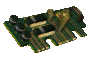 | |
|---|---|
| This cyber enhancement uses neurolinking to provide additional accuracy for the users of long range weapons. Your character gains +40% to Small Guns, Big Guns and Energy Weapons skills and +5 field of view. | |
| Bonuses | +40% to Small Guns. +40% to Big Guns. +40% to Energy Weapons. +5 to Field of Vision. |
| Weight | 10000 grams |
| Base Price | N/A |
| Market Price | People tends to value this implant rather low together with Chem Control it is considered as a low price. What does low price means? Still thousands of caps. |
| Notes | - |
Chem Control Implant
| 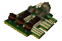 | |
|---|---|
| This implant constantly injects multiple chem reactive compounds into your blood system, allowing you to prolong drug effects on your body and make them more effective. Drugs last twice as long, and Super Stimpaks are 30% more effective. | |
| Bonuses | Doubles drugs duration time. Super Stimpak heals +30% hit points. |
| Weight | 10000 grams |
| Base Price | N/A |
| Market Price | This implant is not the most expensive one, it is actually considered as one of cheaper ones around. Good thing as while cheap it also offering very nice bonuses! |
| Notes | - |
Defense Implant
| 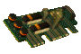 | |
|---|---|
| This implant injects various bone-strenghtening compounds into your system, making your body exceptionally resistant. You gain +4% Damage Resistance and +2 Damage Treshold to any type of attacks. | |
| Bonuses | +2 Damage treshold(all types). +4% Damage resistance(all types). |
| Weight | 10000 grams |
| Base Price | N/A |
| Market Price | This is one of most expensive implants together with Speed and Marksman it's price is usually counted in millions of caps. |
| Notes | - |
Engineering Implant
| 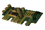 | |
|---|---|
| This implant provides its owner with vast information about engineering and advanced weapon systems design. You gain +100% Repair, Science and Energy Weapons skill. | |
| Bonuses | +100% Repair skill. +100% Science skill. +100% Energy weapons skill. +10% To chance of crafting a item with upgrades. |
| Weight | 10000 grams |
| Base Price | N/A |
| Market Price | N/A |
| Notes | Currently there is no way to obtain this implant. |
Enhancement Implant
| 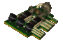 | |
|---|---|
| The exceptional technology used in this implant allows you to attain additional characteristcs, making you more versatile than most humans. You gain 1 additional Perk. | |
| Bonuses | A new perk slot for your character to choose immediately after installing an implant. |
| Weight | 10000 grams |
| Base Price | N/A |
| Market Price | This one is rated in the middle of implant prices. It is worth much more than Chem Control, Accuracy and Enviromental, yet less than Speed or Marksman. I would say it is as valuable as Survival implant. |
| Notes | - |
Enviromental Implant
| 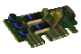 | |
|---|---|
| This implant provides it's user body with additional healing and resistance capabilities, making it more adapted to harsh conditions of the Wasteland. You gain +10 Healing Rate, +40% Poison Resistance and +50% Radiation Resistance. | |
| Bonuses | + 10 Healing Rate. + 40% Poison Resistance. |
| Weight | 10000 grams |
| Base Price | N/A |
| Market Price | This implant is commonly acknowledged as a cheapest one. This still means thousands of caps though. |
| Notes | - |
Marksmanship Implant
| 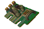 | |
|---|---|
| This implant enhances your sight, with additional viewing spectrums normal humans can't see, providing you with exceptional ability to spot weak points and deal devastating damage. You gain +4 Critical Roll, +4 Critical Chance and see additional 2 hexes further. | |
| Bonuses | +8 To Crit Roll bonus. +4 Crit Chance for your character. +2 To Field of Vision. |
| Weight | 10000 grams |
| Base Price | N/A |
| Market Price | Oh look the most expensive implant! It's literally worth millions of caps. |
| Notes | - |
Medical Implant
| 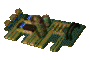 | |
|---|---|
| This implant artificially enhances your medical knowledge by a direct cyber uplink into your brain. Your character gains +50% First Aid and Doctor skills, plus a Living Anatomy Perk. | |
| Bonuses | +50% First Aid skill. +50% Doctor skill. +Living Anatomy perk. +In combat maximum selfheal is equal to 175 Hit Points instead of 150. |
| Weight | 10000 grams |
| Base Price | N/A |
| Market Price | This is one of "middle" implants, when it comes to it price. You will have to pay more for it than for Accuracy Implant, but much less than for Speed for example. |
| Notes | - |
Scouting Implant
| 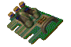 | |
|---|---|
| This bio-upgrade gives you an unprecedented ability to evade attacks and scout surroundings undetected. Your character gains +50% Sneak skill and +30 Armor Class. | |
| Bonuses | +50% Sneak skill. +30 Armor Class. +20 Additionally to Sneak skill at the end calculation. |
| Weight | 10000 grams |
| Base Price | N/A |
| Market Price | It's very hard to determine this implant's market price. For right person it will be worth as much as big three (Speed, Defense, Marksman) yet for some it will be nearly useless. Be patient and you will get a lot of caps yet selling it hastely will yield very little as it's usually hard to find buyer for this one. |
| Notes | - |
Speed Implant
| 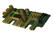 | |
|---|---|
| This enhancement makes your muscles extra durable and resistant to stress, making your body much more agile. Your character moves 10% faster, gains 1 Action Point and 6 Sequence. | |
| Bonuses | When running your animation is 10% faster. +1 Action Point. +6 Sequence. |
| Weight | 10000 grams |
| Base Price | N/A |
| Market Price | This implant is very versatile therefore many people wants it. Therefore its one of most expensive ones. |
| Notes | - |
Survival Implant
| 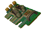 | |
|---|---|
| This high-tech piece of bio-engineering alters its users senses and making them exceptionally keen. Potential threats are much more easier to spot, and your brain is able to absorb knowledge faster.You gain +100% Outdoorsman skill, +30% Experience and an additional 30 Hit Points. | |
| Bonuses | +100% Outdoorsman skill. +30% Experience gain rate. +30 Hit Points. |
| Weight | 10000 grams |
| Base Price | N/A |
| Market Price | This implant is quite expensive, i consider it as a "high middle" class definitely above medical, accuracy and so on, yet below speed, marksman and defense. |
| Notes | - |
Mini FAQ
Q: What if choose Living Anatomy perk before installing Medical Implant?
A: You won't get another Living Anatomy perk.
Q: Exactly how much Doctor skill i will get after installing Medical Implant, assuming i don't allready ave Living Anatomy perk?
A: +70%. A 50% will come from implant and then +20% from living anatomy bonus.
Q: How excatly the crafting bonus works?
A: You will have a 10% better chance to craft an item with bonuses. It will not increase your chances of crafting better quality of items. See Craftable Items page to compare numbers per 1000 crafts with implant and withouth it.
Q: After Installing Scout Implant my AC isn't as high as it should be!
A: Armor Class cannot be higher than 90, so if you're wearing a good armor or have some support perk you might have reached the Armor Class level cap.
Q: When to install Scout Implant? I'm confused if its giving +50% sneak or +70%?
A: It's best to install Scout implant once you have 250% sneak as you will gain +50% bonus to sneak coming from implant. The other mentioned bonus: +20% is calculated at the skill check. So your sneak skill might exceed 300 thanks to it and other sneak granting bonuses stuff like Hubologist's robes or stealthboys.
Q: I have Chem Reliant trait. What will happen once i install Chem Control Implant?
A: Duration of your drugs will stay the same - 60 minutes. On the bright side you will suffer no negative effects of the Chem Reliant trait. Once you install Chem Control module your chances for addiction will be the same as for person without Chem Reliant trait.
Pages in category "Implants"
The following 11 pages are in this category, out of 11 total.